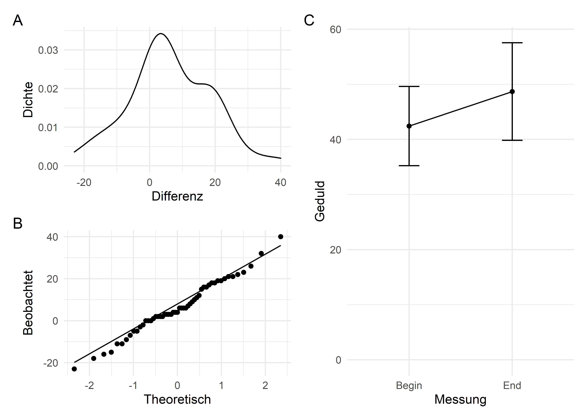
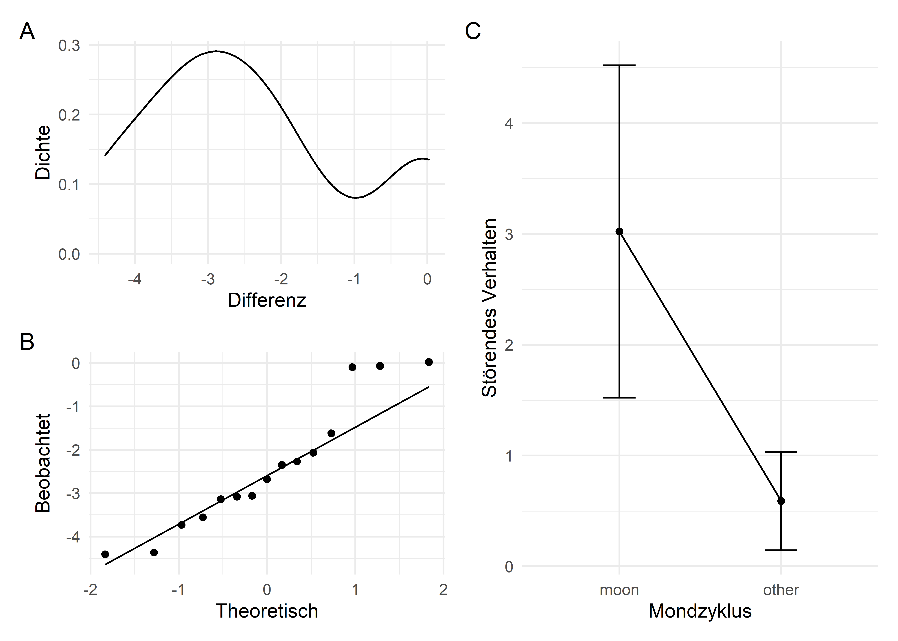

\(t\)-Test bei abhängigen Stichproben

Begeben wir uns in die Welt der Magie, Muggel und Zauberstäbe; tauchen wir ein in die Welt von Harry Potter (Rowling, 1997). Auch in Hogwarts gibt es viel zu entdecken und statistisch zu entschlüsseln. Vielleicht kennst Du die vier Häuser von Hogwarts: Gryffindor, Hufflepuff, Ravenclaw und Slytherin. Jedem dieser Häuser werden verschiedene Eigenschaften nachgesagt, und jeder Schüler wird ausgehend von seinen Eigenschaften durch den sprechenden Hut einem der Häuser zugeteilt. Genau diese Eigenschaften der Schüler in den Häusern können wir uns nun einmal anschauen.
Pakete
Alle Berechnungen und Abbildungen können wir mit unseren Standardpaketen durchführen. Wir benötigen das tidyverse zum Data Wrangling und zur Visualisierung der Daten. haven benötigen wir für den Import von SPSS-Dateien, rstatix für statistische Analysen und skimr für schnelle deskriptive Statistiken.
Beispiel
Den Bewohnern des Hogwarts-Hauses Hufflepuff wird ausgesprochene Geduld nachgesagt. Da ist es nicht verwunderlich, dass die Hauslehrerin Hufflepuffs Professor Pomona Sprout ist, die die langwierige Kräuterkunde unterrichtet. Ein ambitionierter Psychologie-Student hat sich gefragt, ob die Geduld der Mitglieder Hufflepuffs über das Schuljahr in Hogwarts eigentlich zunimmt. Man könnte annehmen, dass die Schüler zu Beginn des Schuljahres weniger geduldig sind, aber während des Schuljahres mit Aufgaben und Herausvorderungen konfrontiert werden, die ihre Geduld wachsen lassen. Dieser ambitionierte Psychologie-Student hat daraufhin zu Beginn und am Ende des Schuljahres alle Hufflepuffs hinsichtlich ihrer Geduld untersucht und uns den Datensatz patience.sav überlassen. Höhere Werte bedeuten eine höhere Geduld des Schülers.
patience_data <- read_spss("data/patience.sav")
patience_data <- patience_data %>%
mutate(measurement = as_factor(measurement))
patience_data## # A tibble: 106 x 3
## id measurement patience
## <chr> <fct> <dbl>
## 1 1 Begin 44
## 2 2 Begin 24
## 3 3 Begin 44
## 4 4 Begin 44
## 5 5 Begin 32
## 6 6 Begin 41
## 7 7 Begin 38
## 8 8 Begin 47
## 9 9 Begin 35
## 10 10 Begin 46
## # ... with 96 more rowsAuch hier finden wir in der Variable measurement wieder den Datentyp <dbl+lbl>, durch den gleichzeitig Werte-Levels und -Labels gespeichert werden. In R arbeiten wir immer mit ordentlichen Faktoren, die wir mit as_factor() erstellen können.
Voraussetzungen
Es gelten die üblichen Voraussetzungen des GLM, allerdings untersuchen wir beim \(t\)-Test mit abhängigen Stichproben die Unterschiede zwischen den beiden Bedingungen (in diesem Fall Beginn vs. Ende des Schuljahres), wodurch der Mittelwert der Differenz dieser beiden Werte normalverteilt sein sollte (Field, 2018). Auch entfällt bei Designs mit Messwiederholung die Annahme der Varianzhomogenität.
EDA
| Name | Piped data |
| Number of rows | 106 |
| Number of columns | 3 |
| _______________________ | |
| Column type frequency: | |
| character | 1 |
| numeric | 1 |
| ________________________ | |
| Group variables | measurement |
Variable type: character
| skim_variable | measurement | n_missing | complete_rate | min | max | empty | n_unique | whitespace |
|---|---|---|---|---|---|---|---|---|
| id | Begin | 0 | 1 | 1 | 2 | 0 | 53 | 0 |
| id | End | 0 | 1 | 1 | 2 | 0 | 53 | 0 |
Variable type: numeric
| skim_variable | measurement | n_missing | complete_rate | mean | sd | p0 | p25 | p50 | p75 | p100 | hist |
|---|---|---|---|---|---|---|---|---|---|---|---|
| patience | Begin | 0 | 1 | 42.42 | 7.20 | 24 | 38 | 42 | 47 | 60 | ▂▃▇▅▂ |
| patience | End | 0 | 1 | 48.68 | 8.85 | 27 | 43 | 48 | 54 | 73 | ▁▆▇▅▁ |
Anhand der wichtigsten statistischen Kennwerte können wir sehen, dass sich die mittlere Geduld der 53 untersuchten Hufflepuffs von Beginn bis Ende des Schuljahres leicht gesteigert hat, von \(M = 42.42, SD = 7.20\) auf \(M = 48.68, SD = 8.85\).

Diesen leichten Trend finden wir auch in der entsprechenden Abbildung (C) wieder. Bezüglich der Voraussetzungen können wir anhand der Kerndichteschätzung (= “geglättetes” Histogramm in A) und dem QQ-Plot (B) davon ausgehen, dass die Unterschiede in den Messwerten annähernd normalverteilt sind. Aufgrund des zentralen Grenzwertsatzes können wir jedoch in jedem Fall davon ausgehen, dass die Voraussetzung der Normalverteilung (der Stichprobenkennwerteverteilung) erfüllt ist.
Wer seine Voraussetzungen gegen ausdrückliche Empfehlung in großen Stichproben dennoch statistisch prüfen will, kann das natürlich trotzdem machen.
patience_data %>%
pivot_wider(
names_from = measurement,
values_from = patience
) %>%
mutate(
difference = End - Begin
) %>%
shapiro_test(difference)## # A tibble: 1 x 3
## variable statistic p
## <chr> <dbl> <dbl>
## 1 difference 0.986 0.785Da wir ein Design mit Messwiederholungen betrachten, interessiert uns, wie bereits oben erwähnt, die Verteilung der Unterschiede zwischen den Messungen, die wir erst noch berechnen mussten. Der Test legt dann nahe, dass die Verteilung der Differenzen zwischen den Messungen nicht signifikant von einer Normalverteilung abweichen (\(p = .785\)). Das heißt natürlich nicht, dass die Differenzen normalverteilt sind.
Durchführung
Ist Die Zunahme der Geduld von Anfang bis Ende des Schuljahres nun statistisch signifikant? Das überprüfen wir nun mit dem \(t\)-Test für abhängige Stichproben.
## # A tibble: 1 x 8
## .y. group1 group2 n1 n2 statistic df p
## * <chr> <chr> <chr> <int> <int> <dbl> <dbl> <dbl>
## 1 patience Begin End 53 53 -3.57 52 0.000778\(p < .001\), also können wir fetstellten, dass sich die Geduld der untersuchten Hufflepuffs von Beginn zu Ende des Schuljahres tatsächlich gesteigert hat. Natürlich interessiert uns nicht nur, ob der Effekt statistisch signifikant ist, vielmehr wollen wir auch die Größe des Effekts, also die Effektstärke berechnen.
## # A tibble: 1 x 7
## .y. group1 group2 effsize n1 n2 magnitude
## * <chr> <chr> <chr> <dbl> <int> <int> <ord>
## 1 patience Begin End -0.483 53 53 smallAm Ende des Schuljahres haben die Hufflepuffs eine größere Geduld, die Effektstärke betrug in dieser Stichprobe \(g = 0.483\) (ausgegeben wird eine Effektstärke von \(g = -0.483\), die nicht angibt, wie viel größer die Geduld der Hufflepuffs am Jahresende, sondern wie viel kleiner die Geduld am Jahresbeginn war; man kann es auf beide Arten berichten).
Berichten
We found Hufflepuff’s students to gain significantly more patience from begin (\(M = 42.42, SD = 7.20\)) to end of school year (\(M = 48.68, SD = 8.85\)), \(t(52) = -3.57, p < .001\). Hedges’ \(g\) between these measurements was \(g = 0.483\), indicating a small to medium effect.
Robuste Alternativen
Folgen.
Aus der Praxis
Moore et al. (2017) stellen uns Daten von Patienten mit Demenz zur Verfügung. Sie haben im Rahmen einer größeren Studie erfasst, ob sich diese Patienten mit Demenz in bestimmten Situationen störender Verhalten als üblich. Genauer gesagt sollte das störende Verhalten in Abhängigkeit verschiedener Phasen des Mondzyklus betrachtet werden. Die Daten sind aus der JASP Data Library (JASP Team, 2019) und in der Datei moon_and_aggression.csv.
Der Datensatz besteht auch zwei Spalten, einmal moon und einmal other. In der ersten Spalte steht die Anzahl der störenden Verhaltensweisen eines Patienten während einer Mondphase, in der zweiten die Anzahl der störenden Verhaltens desselben Patienten in anderen Phasen. Höhere Werte bedeuten hier mehr störendes Verhalten.
EDA
## # A tibble: 15 x 2
## moon other
## <dbl> <dbl>
## 1 3.33 0.27
## 2 3.67 0.59
## 3 2.67 0.32
## 4 3.33 0.19
## 5 3.33 1.26
## 6 3.67 0.11
## 7 4.67 0.3
## 8 2.67 0.4
## 9 6 1.59
## 10 4.33 0.6
## 11 3.33 0.65
## 12 0.67 0.69
## 13 1.33 1.26
## 14 0.33 0.23
## 15 2 0.38Die Daten kommen im wide format, mit dem wir in R ungerne, bzw. selten arbeiten. Die meisten longitudinalen Daten sind im wide format, weil sie so intuitiv einzutragen sind, aber so sind sie eben nicht tidy. Wir müssen die Daten zunächst ins long format überführen, also “länger machen”. Damit wir den Überblick darüber behalten, von wem die Daten eigentlich sind, sollten wir auch Probanden IDs vergeben; dafür reicht eine fortlaufende Nummer. Das erreichen wir ganz unkompliziert mit der Funktion rownames_to_column(), der wir das Argument var = "id" mitgeben, so wird die neu erstellte Spalte direkt nach unseren Wünschen benannt.
moon <- moon %>%
rownames_to_column(var = "id") %>%
pivot_longer(
cols = -id,
names_to = "cycle",
values_to = "aggressive_behavior"
)
moon %>%
group_by(cycle) %>%
get_summary_stats()## # A tibble: 2 x 14
## cycle variable n min max median q1 q3 iqr mad mean sd
## <chr> <chr> <dbl> <dbl> <dbl> <dbl> <dbl> <dbl> <dbl> <dbl> <dbl> <dbl>
## 1 moon aggress~ 15 0.33 6 3.33 2.34 3.67 1.34 0.979 3.02 1.50
## 2 other aggress~ 15 0.11 1.59 0.4 0.285 0.67 0.385 0.297 0.589 0.445
## # ... with 2 more variables: se <dbl>, ci <dbl>Anhand der deskriptiven Kennwerte können wir die Tendenz erahnen, dass sich die untersuchten Patienten mit Demenz in Mondphasen störender verhielten (\(M = 3.02, SD = 1.50\)) als in anderen Mondphasen (\(M = 0.59, SD = 0.45\)). Wir haben eine sehr kleine Stichprobe von \(n = 15\) Probanden mit zwei Messungen. Wir sollten unsere Voraussetzungen also auf jeden Fall gründlich prüfen. Bei dem \(t\)-Test mit verbundenen Stichproben müssen die Differenzen normalverteilt sein.

Aus Abbildungen A (der Kerndichteschätzung der Differenzen) und B (dem QQ-Plot der Differenzen) können wir entnehmen, dass das ganz gut aussieht. Bis auf einen kleinen bumper am Ende sehen die Daten recht normalverteilt aus. Was sagt der Shapiro-Wilk-Test?
moon %>%
pivot_wider(
names_from = "cycle",
values_from = "aggressive_behavior"
) %>%
mutate(difference = other - moon) %>%
shapiro_test(difference)## # A tibble: 1 x 3
## variable statistic p
## <chr> <dbl> <dbl>
## 1 difference 0.913 0.148Da \(p = .148\) und somit über \(.05\), sehen wir hier erstmal kein Problem. Wir dürfen den \(t\)-Test für gepaarte/abhängige Stichproben berechnen.
Durchführung
Die eigentliche Durchführung ist auch hier wieder kurz und schmerzlos.
## # A tibble: 1 x 8
## .y. group1 group2 n1 n2 statistic df p
## * <chr> <chr> <chr> <int> <int> <dbl> <dbl> <dbl>
## 1 aggressive_behavior moon other 15 15 6.45 14 0.0000152## # A tibble: 1 x 7
## .y. group1 group2 effsize n1 n2 magnitude
## * <chr> <chr> <chr> <dbl> <int> <int> <ord>
## 1 aggressive_behavior moon other 1.57 15 15 largeLaut \(t\)-Test ist die Häufigkeit von störendem Verhalten von Patienten mit Demenz während Mondphasen signifikant höher als während anderer Phasen (\(p < .001\)); und das mit einem relativ großen Effekt (\(g = 1.57\)).
Berichten
We found patients with dementia to show significantly more disruptive behavior during moon phases of the lunar cycle (\(M = 3.02, SD = 1.50\)) than in other phases (\(M = 0.59, SD = 0.45\)), \(t(14) = 6.45, p < .001\) with a large effect of \(g = 1.57\).
Literatur
Field, A. P. (2018). Discovering Statistics using IBM SPSS Statistics (5th ed.). SAGE.
JASP Team. (2019). The JASP Data Library: Version 2. JASP Publishing. https://jasp-stats.org/wp-content/uploads/2019/11/The_JASP_Data_Library__version_2-1.pdf
Moore, D. S., McCabe, G. P., & Craig, B. A. (2017). Introduction to the practice of statistics (9th ed.). W. H. Freeman.
Rowling, J. K. (1997). Harry Potter and the Philosopher’s Stone. Bloomsbury.